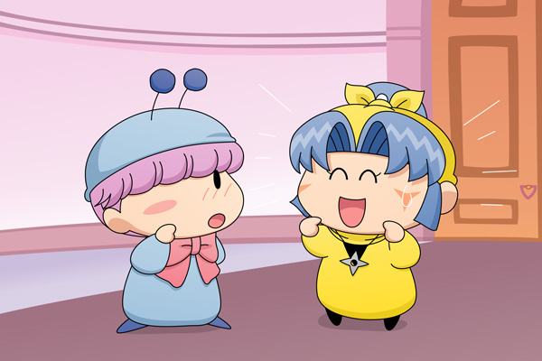

ムルモ「ほぇ、ヤマネしゃんがお城に訪ねてくるなんて
めずらしいでしゅね」
ヤマネ「あの、その・・・今日はムルモ殿にご相談いただきたい
ことがありまして・・・」
ムルモ「ヤマネしゃんのためならボクがんばっちゃいましゅよ！」
ヤマネ「わぁっ、それはありがたく存じます！」
ムルモ「で、ヤマネしゃんの相談って何でしゅか？」
ヤマネ「はい、どうしたらヤシチ兄様に振り向いていただけるのか、
ムルモ様のご助言をいただければと・・・」
ムルモ「・・・・・・」
ヤマネ「？」
ムルモはヤマネに背を向けぶつぶつ何かを言っているようです。
ムルモ「ちっ、相談って男のことでしゅか。
しかも相手はヤシチしゃんでしゅか。
いまいちやる気がでないでしゅね」
ヤマネ「ムルモ殿？どうなさいましたか？」
ムルモ「・・でもヤマネしゃんを困らせるのはボクらしくないでしゅ」
表情を裏モードから戻して再びヤマネの方を向くムルモ。
ムルモ「おやすい御用でしゅよ！
ボクのアドバイスがあれば、ヤシチしゃんもヤマネしゃんに
絶対メロメロになるでしゅ～」
ヤマネ「本当でございますか！！」
ヤマネの不安げな表情がぱーっと明るくなりました。
ムルモ「はいでしゅ！
その方法とは・・・」
ヤマネ「その方法とは！」
ムルモ「『ニコニコでメロメロ作戦』でしゅ！」
ヤマネ「『ニコニコでメロメロ作戦』・・・でございますか？」
ムルモ「好きな相手を振り向かしぇるには
キュートな笑顔が必要なんでしゅよ。
ヤマネしゃんは笑顔が似合うから、ヤマネしゃんが笑顔なら
きっとヤシチしゃんもヤマネしゃんのことが気になって
気になって仕方なくなるはずでしゅ！
そうと決まれば早速練習でしゅよ！！」

ムルモはヤマネに笑顔の表情を作るよう言いました。
ヤマネ「こう・・・ではいかがでしょう？」
ムルモ「まだ表情が硬いでしゅ！
こうするんでしゅよ！きゃぴ☆」
ヤマネ「う～ん、それでは・・・きゃぴ☆」
ムルモ（ほええっ、ヤマネしゃんって結構かわいいでしゅね）
ヤマネは早速ヤシチに会いに行き、ムルモに言われた通りにヤシチに笑顔を見せました。先日の嫌み騒動が起こったばかりなだけに、ヤマネの表情に気味悪さを感じるヤシチでありました・・・。
だんだんとヤマネいじりなストーリー展開になっているなぁ。ムルモのアドバイスは私的にはヤシチを振り向かせる効力はあると思いますが、実施するタイミングが悪すぎました。そういう意味でも前々回のネズミの責任は重いですね(^^;。
本当は今回のお話の前にサスケのアドバイスも入れるつもりでしたが、ちょっと雰囲気が重くなりそうだったのでカットされました。サスケファンの方ごめんなさいm(_ _)m。
(2009/10/13)